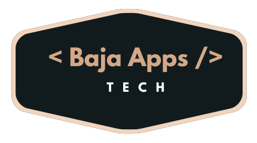

Quienes somos:
Baja Apps Tech es una empresa cien por ciento mexicana dedicada a proporcionar herramientas innovadoras en el área de Tecnologías de la Información, que den solución a las necesidades empresariales y sociales, mediante la integración de Hardware y desarrollo de Software que optimicen los procesos y fomenten el crecimiento y la productividad de su negocio.
Somos un grupo con más de 10 años de experiencia, integrado por especialistas en Tecnologías de la Información, que han desarrollado soluciones tanto para el sector comercial como el gubernamental.
Nuestro Trabajo
Realizamos desarrollo de Software a la medida, consultoría a BD SQL Server, diseño y desarrollo WEB, además contamos con sistemas comerciales para facturación electrónica, timbrado de nómina, receptoría con validación de comprobantes fiscales y sistemas biométricos para control de asistencia de personal, entre otros.
Nuestros productos y servicios cumplen con los más altos estándares de calidad y su desarrollo se orienta a dos aspectos fundamentales: el uso práctico de las herramientas y la satisfacción de nuestros clientes; dichas soluciones están diseñadas para cubrir las necesidades de pequeñas, medianas y grandes empresas, así como los sectores gubernamental e industrial.
Nuestros diferenciadores son el trato personalizado, atención inmediata, el desarrollo de soluciones a la medida, integración de nuestros productos comerciales con sistemas del cliente, soluciones tecnológicas de vanguardia, alto sentido de responsabilidad y valores éticos, así como tomar muy en cuenta la opinión de nuestros clientes, a fin de brindar lo mejor de nosotros: profesionalismo y confianza.
Misión:
Desarrollar soluciones informáticas que optimicen los procesos, mejoren el desempeño organizacional y potencien la productividad de nuestros clientes.
Ofrecer productos y servicios de fácil uso y acordes a las necesidades de cada empresa, basados en tres principios: innovación tecnológica, calidad y funcionalidad. Contribuir en la mejora tecnológica buscando la satisfacción de nuestros clientes y así consolidarnos como líder en tecnología de la información.
Visión:
Ser una compañía líder en tecnologías de la información y la mejor opción para satisfacer las necesidades empresariales, en cuanto a la integración de Hardware y desarrollo de Software. Utilizando nuestros conocimientos en la materia para contribuir con el cumplimiento de los objetivos estratégicos de los clientes y que cada vez más empresas estén a la vanguardia.
Ser una empresa que promueva el desarrollo personal y profesional de nuestro grupo de colaboradores.
Ser una empresa que retribuya a la sociedad en beneficios tecnológicos, culturales y económicos.
Objetivos:
- Crear soluciones de tecnologías de información a la medida de las necesidades de los clientes.
- Optimizar la operación y control fomentando la productividad de las empresas.
- Brindar asesoría a los clientes cada vez que lo requieran, para garantizar el funcionamiento óptimo de los mecanismos y la satisfacción de los usuarios
- Desarrollar investigación enfocada en la innovación tecnológica y calidad de los productos y los servicios, a fin de cumplir con las nuevas exigencias del mercado y la competencia.
- Desarrollar soluciones que ayuden a mejorar la calidad de vida de las personas.